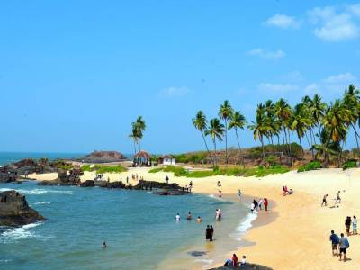

our gallery
explore the most visited places
shri krishna temple
Considered to be one of the most famous pilgrimage sites in South India, the Krishna Temple or the Udupi Sri Krishna Matha is one of the most auspicious temples dedicated to Lord Krishna. The idol of Krishna is adorned with jewels and a golden chariot. What makes the temple unique, is its worshipping pattern. The prayers and process of the whole worship take place only through a silver-plated window with nine holes called the Navagraha Kitiki. A temple known as Udupi Anantheshwara Temple surrounds the Shree Krishna Matha. This temple traces back to 1,000 years.
malpe beach
Malpe beach, located 6 kilometres from Udupi in Karnataka is one of the best places to visit in Udupi. This scenic beach is popular amongst locals and foreigners alike. The pristine white sand, pleasant weather, and the delectable food shacks here and the plenty water sports options make Malpe Beach an ideal spot for a quick escape. The latest addition to the beach by the authorities is the free wifi facility that is available 24 x 7!

st mary iceland
Located just 4 miles off the coast of Karnataka in the Arabian Sea, St. Mary's Island is a geological treasure and hosts some of the most beautiful beaches in the country. It is a group of four individual islands namely Coconut Island, North Island, South Island and Daryabahadurgarh Island. One can find a shoreline made up full of crystalline rocks which were created at the time Madagascar Island got separated from India.
kudlu falls
Also known as Sita Falls, Kudlu Falls is famous for its picturesque beauty. The waterfall cascades down the Western Ghats from a height of 150 feet in the midst of a dense green cover of the hilly terrain. It requires a moderate level of trekking through the green zone to reach the enchanting waterfall. The attraction is, thus, a favourite amongst trekkers and nature lovers.